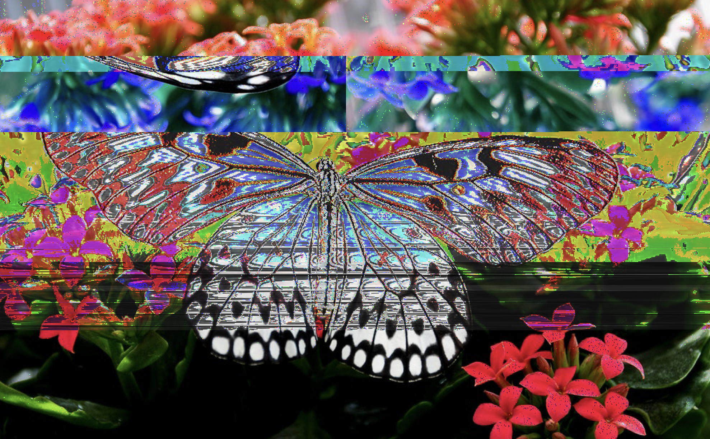

glitch art collection
floral static
Medium: Audacity(September, 2024)
Taking a raw image from my photo gallery, I used it as the base for my glitch art project. This piece was an introductory piece to glitch art
so I was mainly experimenting with how the program works. Eventually, I ended up with a cool color contrast of purple and vibrant green.

Psychedelic Wings
Medium: Audacity(September, 2024)
While experimenting with 'floral static,' I was also working on this image of a butterfly to compare and contrast the differences in Audacity settings.
For example, I used inverse and reverse for the butterfly while I used EQ for the flowers. It was mostly to see how colors were effected by the different settings.
I do like the vibrant colors that came out of the butterfly image!
y2k
Medium: Audacity & Procreate(March, 2025)
Taking a digital illustration I had done in Procreate, I decided to glitch it up in Audacity. I was inspired by the y2k aesthetic and was thinking on how to make the work more interesting. So
I decided bring the work into Audacity to tweak around the colors and layering. I used a variety of sound filters to get a VHS looking effect.

space jam
Medium: Audacity & Procreate(March, 2025)
Originally, the image was a digital edit/illustration of myself modelling a pair of wire glasses I had made. It was giving a futuristic vibe so I wanted to see how glitches would look like for this image.
The green and pinks created by the Audacity filters gives the piece an X-ray feeling which I thought was further leaning into future tech(robots and so forth) so I kept it in my work. There's also something so old school
about the filters that also reminds me of a VHS tape so the piece became a mixture of futuristic and vintage vibes.